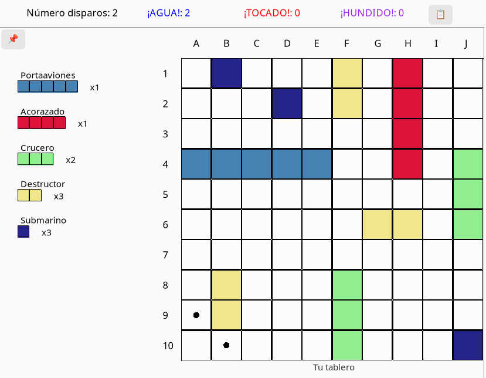

Hundir la flota
1 Descripción del juego
1.1 Tableros
Los tableros están formados por casillas con un tamaño de 10x10, con las filas enumeradas del 1 - 10 y las columnas de la A - J.
Hay dos tableros colocados uno al lado del otro identificados con los mensajes Tu tablero y Tablero del contrincante
Durante la fase de colocación de los barcos Tu tablero será el lugar donde los barcos del jugador son colocados mientras que la máquina colocará sus barcos en Tablero del contrincante.
Una vez que el juego ha comenzado, el jugador realizará los disparos sobre Tablero del contrincante y la máquina sobre Tu tablero
1.2 Flota
Tanto el jugador como la máquina tienen la misma flota formada por los siguientes barcos:
- 1 x Portaaviones de 5 casillas
- 1 x Acorazado de 4 casillas
- 2 x Cruceros de 3 casillas
- 3 x Destructores de 2 casillas
- 3 x Submarinos de 1 casilla
El estado actual de la flota del jugador puede visualizarse a la izquierda de Tu tablero mientras que el estado de la flota de la CPU se encuentra a la derecha del Tablero del contrincante.
1.3 Contrincante
El único contrincante disponible será la máquina (CPU) que podrá personalizarse con uno de los siguientes algoritmos.
1.3.1 Algoritmo aleatorio
La fila y columna que se selecciona para disparar es generada aleatoriamente.
La única restricción será seleccionar casillas no disparadas y que no sean contiguas a un barco ya hundido.
1.3.2 Algoritmo Hunt/Target
Fuente original: http://www.datagenetics.com/blog/december32011/. La versión presentada ha sufrido variaciones.
Este algoritmo usa dos modos (funciones) conjuntos para determinar la posición de un barco y hundirlo: el modo hunt para buscar un objetivo, y el modo target para hundirlo.
El modo hunt empieza disparando de forma aleatoria hasta que un disparo acierte en un barco. Posteriormente, se creará una lista con las casillas vecinas a la casilla acertada.
Seguidamente, el modo target precisa la orientación del barco, añade nuevas casillas a la lista con cada acierto, y sigue disparando hasta que se hunda el barco para después volver de nuevo al modo hunt para encontrar un nuevo objetivo.
El algoritmo finalizará cuando todos los barcos han sido hundidos.
En las siguientes subsecciones, se explica de forma detallada la actuación de cada modo. A continuación, se muestra un gif demostrando el uso del algoritmo:
MODO HUNT
Consiste en disparar de forma aleatoria seleccionando en casillas no disparadas ni contiguas a un barco hundido con los siguientes filtros:
Pariedad. Se escogen solo aquellas casillas que hacen la pariedad par del barco con menor tamaño sin hundir, reduciendo el espacio de búsqueda.
Espacio. Las casillas seleccionadas solo podrán ser aquellas que en alguna de sus cuatro direcciones haya las suficientes casillas vacías para albergar el barco de menor longitud sin hundir.
Los dos filtros siempre se aplican usando la longitud del barco menor sin hundir, ya que si se usara otra longitud o la del mayor barco habría que hacer más "pasadas" por el tablero; así se garantiza que todos los barcos pueden ser alcanzados al menos una sola vez en menos disparos comparado a recorrer todo el tablero casilla por casilla.
Al existir un barco de una casilla el modo hunt no aplica con demasiada frecuencia el beneficio de los filtros descritos
Una vez elegida la casilla y disparado sobre ella, resultado del disparo determinará la forma de seguir:
AGUA: se produce un cambio de turno. Cuando sea otra vez el turno de la CPU volverá a modo hunt para buscar un nuevo objetivo.
HUNDIDO: se vuelve al modo hunt para buscar el siguiente objetivo.
TOCADO: un barco ha sido alcanzado. Se añaden sus cuatro casillas vecinas a una lista de objetivos que será usada seguidamente por el modo target.
El uso de la lista es necesario para mantener los objetivos guardados después de un cambio de turno, o retroceder si el disparo no ha sido en los extremos del barco.
Siempre que se añada una nueva casilla a lista de objetivos, será una casilla no disparada con anterioridad y que no sea contigua a un barco ya hundido.
MODO TARGET
Cuando un barco es TOCADO en el modo hunt, se ha rellenado la lista de objetivos con sus cuatro casillas vecinas (Norte, Sur, Este y Oeste).
Para que los barcos verticales no estén en desventaja, es necesario que la lista de objetivos inicial (rellenada con las casillas Norte, Sur, Este y Oeste) sea barajada.
AGUA: se produce un cambio de turno. Cuando sea otra vez el turno de la CPU volverá al modo target para descartar los objetivos restantes.
HUNDIDO: se vuelve al modo hunt para buscar un nuevo objetivo. La lista de objetivos se vacía.
TOCADO: si la casilla está en la misma columna el barco es vertical; si está en la misma fila es horizontal.
Una vez determinada la orientación del barco se eliminan (si aún existen) los objetivos residuales de la lista de objetivos (casillas Norte y Sur si el barco es horizontal o las casillas Este y Oeste si el barco es vertical).
Se añade la siguiente casilla de la misma fila (si el barco es horizontal) o de la misma columna (si es vertical).
En las sucesivas llamadas al modo target, se elige el primer elemento de la lista de objetivos, se procesa, se elimina y se añade la siguiente nueva casilla objetivo (dependiendo de la orientación) hasta que el barco sea hundido y se vuelva de nuevo al modo hunt para buscar un nuevo objetivo.
1.4 Fases del juego
1.4.1 Colocación de los barcos
Esta es la primera fase de todas las partidas. Esta fase puede ser identificada por el mensaje mostrado en el estado: Posicione sus barcos.
El estado de la flota del jugador (mostrada a la izquierda de Tu tablero) muestra por cada barco cuantos quedan por colocar. Una vez que un barco es colocado en el tablero, el número disminuirá hasta que se muestre el mensaje ¡Colocados! indicando que todos los barcos de ese tamaño han sido colocados en el tablero.
Durante la colocación, ninguna parte de cualquier barco puede estar contigua a cualquier otra parte (ni diagonalmente). Los modos automáticos aplican esta restricción de forma automática mientras que el modo manual impedirá al jugador colocar un barco si intenta saltarse esta restricción.
La máquina coloca la flota de forma automática en el (Tablero del contrincante) mientras que el jugador debe colocar sus barcos sobre (Tu tablero) de alguna de las siguientes formas:
Colocar barco manualmente.
El usuario coloca el barco en el tablero haciendo click izquierdo o click derecho con el ratón sobre cualquier casilla de su tablero. La casilla clickada es en realidad la posición de la proa del barco.
Si se hace click izquierdo el barco es colocado horizontalmente, mientras que click derecho coloca el barco verticalmente.
Por tanto, si se elige colocar el barco de forma horizontal, el barco será colocado hacia la derecha (hacia el Este) desde la casilla seleccionada. Si el barco es orientado verticalmente, será dispuesto hacia abajo (hacia el Sur) desde la casilla clickada
El barco no será colocado si se elige una casilla que implica que el barco se salga del tablero.
Colocar barco aleatoriamente.
Usando el botón Generar barco, se coloca un barco en una posición aleatoria sobre el tablero (la orientación es también aleatoria).
Este modo no es excluyente con el anterior, es decir, se puede seguir clickando en el tablero para colocar los barcos dando la posibilidad de usar los dos modos de forma conjunta.
Colocar flota aleatoriamente.
Todos los barcos son colocados aleatoriamente sobre el tablero (la orientación también es aleatoria).
Cargar tablero desde el archivador.
Pulsando el botón archivador permite acceder a la funcionalidad archivador de tableros para seleccionar un tablero guardado con anterioridad para volver a usarlo. El
Generar un barco aleatoriamente o colocarlo manualmente, siempre genera una representación visual con un color grisáceo alrededor del barco, indicando que ninguna parte de otros barcos puede tocar esa zona.
El orden de la colocación de la flota siempre es en orden descendente al tamaño del barco.
Una vez que todos los barcos son colocados se habilita el botón de Confirmar. Si queda algún barco por colocar, el botón permanecerá inactivo.
Durante todo el proceso de colocación el botón Limpiar tablero siempre permanece activo, permitiendo borrar todos los barcos colocados en ese momento y volviendo a estar disponibles para su colocación.
El botón Guardar tablero también se habilita si todos los barcos son colocados permitiendo así guardar el tablero en el archivador.
1.4.2 Partida iniciada
A esta fase se accede pulsando el botón Confirmar después de que el jugador haya colocado todos los barcos.
Durante esta fase intermediaria, el estado de la patida mostrará el mensaje Va a comenzar la partida... ¡Empiezas tú! o Va a comenzar la partida... ¡Empieza el contrincante! junto a una cuenta atrás de 5 segundos. El mensaje indica quién será el primero en disparar.
Mientras que la cuenta atrás finaliza, las opciones de la fase anterior desaparecen y arriba de cada tablero aparecen las estadísticas de disparos de cada jugador junto a un botón para acceder al historial de disparos.
Una vez finalizada la cuenta atrás, la partida ya comenzará volviendo a indicar de quién es el turno y un cronómetro del tiempo transcurrido.
1.4.3 Transcurso de la partida
Esta es la fase principal del juego. Los turnos de la máquina y el jugador irán intercalándose durante toda esta fase.
El estado de la partida mostrará el mensaje Tu turno ¡Dispara! o Turno del contrincante ¡Espere! indicando el turno del jugador o la máquina, respectivamente.
Durante su turno, el jugador/máquina dispará sobre el tablero del contrincante. Los resultados de los disparos serán los siguientes:
¡AGUA!: el disparo ha sido sobre una casilla con agua. El turno es cambiado
¡TOCADO!: el disparo ha alcanzado una casilla con un barco. El jugador/máquina pueden continuar disparando (el turno no cambia)
¡HUNDIDO!: el disparo ha sido sobre la última casilla de un barco. El jugador/máquina pueden continuar disparando (el turno no cambia)
Los disparos sobre agua son representados como mientras que los disparos sobre barcos como .
El barco que es alcanzado no es identificado hasta que se hunda, en ese momento la flota del contrincante se actualizará.
En cada disparo, los contadores del jugador/máquina son actualizados, así como su historial de disparos.
Cuando no es el turno del jugador el Tablero del contrincante se desactiva y adopta una visualización grisácea. Si no es el turno de la máquina pasa lo mismo pero sobre Tu tablero
Turno del jugador
El turno del jugador será identificado por el mensaje Tu turno ¡Dispara!.
Durante el turno del jugador, disparará al contrincante haciendo click izquierdo sobre alguna de las casillas del Tablero del contrincante.
Cada disparo aumentará los contadores situados encima del Tablero del contrincante. Cuando un barco es hundido, disminuirá el número (situado a la derecha del barco hundido) en el estado de la flota del contrincante (situada a la derecha del Tablero del contrincante).
Turno de la máquina
El turno de la máquina será identificado por el mensaje Turno del contrincante ¡Espere!.
Durante el turno de la máquina, dispara de forma automática usando el algoritmo seleccionado en la primera fase sobre Tu tablero.
Cada disparo aumentará los contadores situados encima de Tu tablero. Cuando un barco es hundido, disminuirá el número (situado a la derecha del barco hundido) en el estado de la flota del contrincante (situada a la izquierda de Tu tablero).
